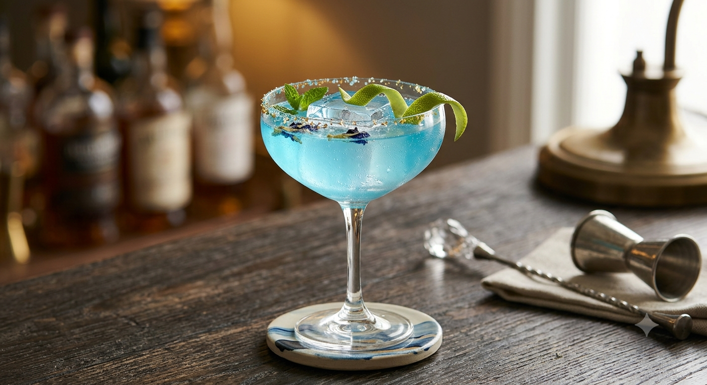
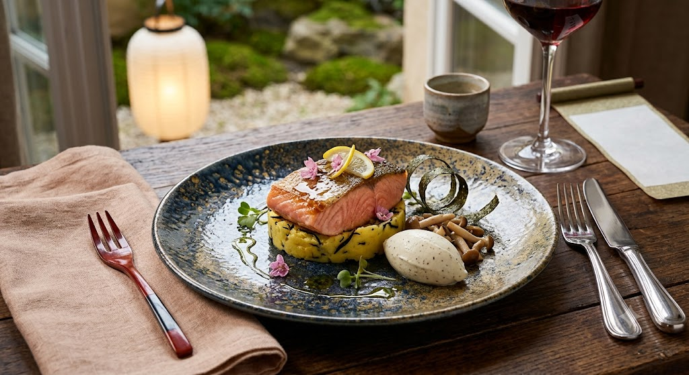
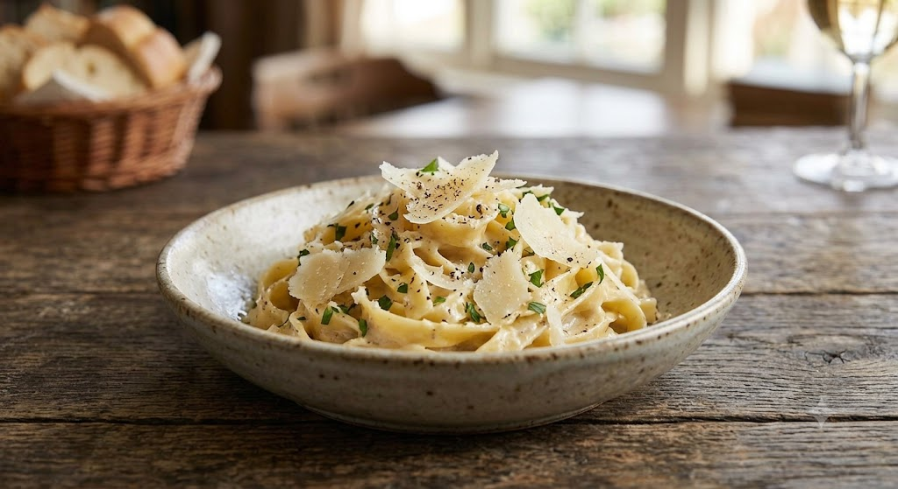
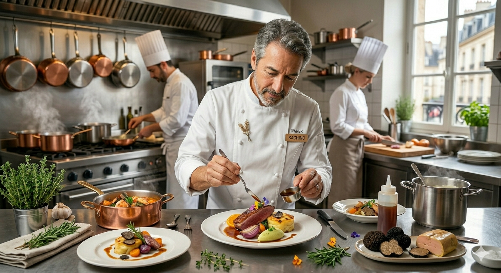

Bistro Vendange
熟成チーズのクリームパスタと、
厳選されたアルザスワイン

The Concept
私たちは、登米の生産者の努力を大切にし、その土地の個性をフランス伝統料理の技法で表現します。地元の味噌や醤油、旬の野菜を隠し味に。フランスの風を感じながらも、どこか懐かしさを覚える「和の心」を込めたフレンチをご堪能ください。
Signature Dish

濃厚なチーズのコクと、自家製パンのほのかな甘みが溶け合う当店一番人気のメニュー。口に含んだ瞬間に広がる芳醇な香りと、生パスタの弾力ある食感は、ワインとの相性も抜群です。
Voice of Guests
「鶏肉の煮込みがお肉ホロホロで感動しました。コーヒーも酸味が少なく深い味で、贅沢な時間を過ごせました。」
常連のお客様
「仙台牛のロティは絶品。お料理のペース、ワインの飲み比べも最高で、贅沢な一夜に。コスパも素晴らしい。」
記念日利用のお客様
「野菜がとにかく甘くて美味しい！料理を丁寧に作っているのが伝わります。パフェも絶品で、予約して正解でした。」
平日ランチ利用のお客様

Chef's Story
「良い素材を、一番おいしい状態で食べていただきたい。」
日本ソムリエ協会認定ソムリエとしての知識と、フランスで培った技術、フランス伝統の技、そして登米の恵み。そのすべてを一本の線でつなぐことが、私の使命です。
オーナーシェフ 佐藤 大典
| 住所 | 〒987-0511 宮城県登米市迫町佐沼内町６３-４ |
|---|---|
| 営業時間 |
ランチ 11:00～15:00 ディナー 17:30～23:00 |
| 定休日 | 月曜日・日曜日 |
| 電話番号 | 0220-22-5028 |
| アクセス | 登米市中心部・鹿ケ城公園前バス停すぐ 駐車場完備 |
| 予約 | ※人気店につき事前予約を推奨いたします。 |